소음진동기사 (2022-04-24 기출문제)
1과목: 소음진동계획
1. A공장 장방형 벽체의 가로 ×세로가 8m×4m 이다. 벽면 밖에서의 SPL이 83dB이었다면 15m 떨어진 지점에서의 SPL은 몇 dB 인가?
- 56 dB
- 59 dB
- 62 dB
- 65 dB
(정답률: 알수없음)

2. 진동의 등감각곡선에 대한 설명으로 틀린 것은?
- 진동계에서 등감각곡선에 기초한 보정회로를 통한 레벨을 진동레벨이라 한다.
- 일반적으로 수직 보정된 레벨을 많이 사용한다.
- 수평진동은 9~12Hz 범위에서 가장 예민한다.
- 수직진동은 4~8Hz 범위에서 가장 예민한다.
(정답률: 알수없음)
3. 80dB(A)의 소음도에 7시간, 70dB(A)의 소음도에 3시간 노출된 지점의 등가 소음도는 약 몇 dB(A)인가?
- 75
- 79
- 81
- 82
(정답률: 알수없음)
4. 백색잡음에 관한 설명으로 틀린 것은?
- 보통 저음역과 중음역대의 음량이 상대적으로 고음역대보다 높아 인간의 청각면에서는 적색잡음이 백색잡음 보다 모든 주파수대에 동일음량으로 들린다.
- 인간이 들을 수 있는 모든 소리를 혼합하면 주파수, 진폭, 위상이 균일하게 끊임없이 변하는 완전 랜덤 파형이 형성되며 이를 백색잡음이라 한다.
- 단위 주파수 대역(1Hz)에 포함되는 성분의 세기가 전 주파수에 걸쳐 일정한 잡음을 의미한다.
- 모든 주파수 대에 동일한 음량을 가지고 있는 것임에도 불구하고, 저음역대로 갈수록 에너지 밀도가 높아 저음역대 쪽의 음성분이 더 많은 것으로 들린다.
(정답률: 알수없음)
5. 음의 크기(Londness)를 결정하는 방법으로 틀린 것은?
- 18~25세의 연령군을 대상으로 한다.
- 1000Hz 를 중심으로 시험한다.
- 청감이 가장 민감한 주파수는 약 4000Hz 이다.
- 50 phon은 100Hz에서 50dB이다.
(정답률: 알수없음)
6. 주파수 15Hz, 진동속도 파형의 전진폭이 0.0004 m/s 인 정현 진동의 진동 가속도레벨(dB)은 얼마인가?
- 68.2
- 62.5
- 59.3
- 57.7
(정답률: 알수없음)
7. 음압진폭이 2×10-2 N/m2 일 때 음의 세기의 실효치(W/m2)는 얼마인가? (단, 공기밀도 1.25 kg/m3, 음속 337m/s 이다.)
- 4.75×10-5
- 4.75×10-6
- 4.75×10-7
- 4.75×10-8
(정답률: 알수없음)
8. 사람의 청각기관 중 중이에 관한 설명으로 틀린 것은?
- 음의 전달 매질은 기체이다.
- 망치뼈, 모루뼈, 등자뼈 라는 3개의 뼈를 담고 있는 고실과 유스타키오관으로 이루어진다.
- 고실의 넓이는 약 1~2cm2 정도이다.
- 이소골은 진동음압을 20배 정도 증폭하는 임피던스 변환기 역할을 한다.
(정답률: 알수없음)
9. 음장에 관한 설명으로 틀린 것은?
- 확산음장은 잔향음장에 혹하며, 밀폐된 실내의 모든 표면에서 입사음이 거의 100% 반사된다면 실내의 모든 위치에서 음의 에너지밀도는 일정하다.
- 근음장은 음원에서 근접한 거리에서 발생하며, 음원의 크기, 주파수, 방사면의 위상에 크게 영향을 받는 음장이다.
- 자유음장은 근음장 중 역2승법칙이 만족하는 구역이다.
- 근음장에서의 입자속도는 음의 전파방향과 개연성이 없다.
(정답률: 알수없음)
10. 음의 마스킹 효과에 대한 설명으로 틀린 것은?
- 크고, 작은 두 소리를 동시에 들을 때 큰 소리만 듣고 작은 소리는 듣지 못하는 현상이다.
- 두 음의 주파수가 비슷할 때는 마스킹 효과가 대단히 커진다.
- 작업장 안에서의 배경음악은 마스킹 효과를 이용한 것이다.
- 고음이 저음일 잘 마스킹 한다.
(정답률: 알수없음)
11. 소음의 특징으로 가장 거리가 먼 것은?
- 감각적이다.
- 대책 후에 처리할 물질이 거의 발생되지 않는다.
- 모든 소음은 광범위하고, 단발적이다.
- 축적성이 없다.
(정답률: 알수없음)
12. 음파의 진행방향에 장애물이 있을 경우 장애물 뒤쪽으로 음이 전파되는 현상을 무엇이라 하는가?
- 반사
- 회절
- 굴절
- 방음
(정답률: 알수없음)
13. 점음원과 선음원(무한장)이 있다. 각 음원으로부터 10m 떨어진 거리에서의 음압레벨이 100dB 이라고 할 때, 1m 떨어진 위치에서의 각각의 음압레벨은 얼마인가? (단, 점음원-선음원 순서이다.)
- 120dB - 110dB
- 120dB - 120dB
- 130dB - 110dB
- 130dB – 120dB
(정답률: 알수없음)
14. 평균 음압이 3515 N/m2이고, 특정 지향음압이 6250 N/m2 일 때, 지향지수(dB)는 얼마인가?
- 3.8
- 5.0
- 6.3
- 7.2
(정답률: 알수없음)
15. A공장의 측정소음도가 70dB(A) 이고, 배경소음도가 59dB(A) 이었다면 공장의 대상소음도는 얼마인가?
- 70 dB(A)
- 69 dB(A)
- 68 dB(A)
- 67 dB(A)
(정답률: 알수없음)
16. 소음성 난청에 관한 설명으로 틀린 것은?
- 난청은 4000 Hz 부근에서 일어나는 경우가 많다.
- 소음이 높은 공장에서 일하는 근로자들에게 나타나는 직업병이다.
- 1일 8시간 폭로의 경우 난청방지를 위한 허용치는 130 dB(A) 이다.
- 영구적 난청이라고도 하며, 소음에 폭로된 후 2일~3주 후에도 정상청력으로 회복되지 않는다.
(정답률: 알수없음)
17. 마스킹 효과에 대한 설명으로 옳은 것은?
- 협대역폭의 소리가 같은 중심주파수를 갖는 같은 세기의 순음보다 더 작은 마스킹 효과를 갖는다.
- 마스킹 소음의 레벨이 커질수록 마스킹되는 주파수의 범위는 점점 줄어든다.
- 마스킹효과는 마스킹소음의 중심주파수보다 고주파수대역에서 보다 작은 값을 갖게 되는 이중대칭성을 갖고 있다.
- 마스킹소음의 대역폭은 어느 한계(한계대역폭) 이상에서는 그 중심주파수에 있는 순음에 대해 영향을 미치지 못한다.
(정답률: 알수없음)
18. 직경 d, 길이 ℓ인 축의 중앙에 관성모멘트 J인 계가 비틀림 진동을 할 때의 비틀림 진동의 주기를 구하는 계산식으로 옳은 것은? (단, 축의 전단 탄성계수를 G로 한다.)
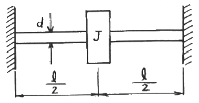
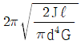
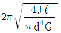
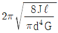
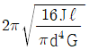
(정답률: 알수없음)
19. 아래 그림에서 (a), (b) 진동계의 고유진동수를 구하는 계산식으로 옳은 것은? (단, S는 스프링 정수, M은 질량이다.)
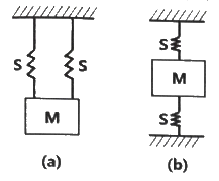
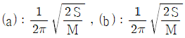
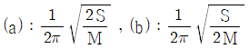
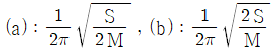
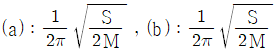
(정답률: 알수없음)
20. 어떤 소리의 세기가 단위면적당 10-2 W/m2 일 때 소리의 세기레벨은 몇 dB 인가?
- 80 dB
- 100 dB
- 110 dB
- 120 dB
(정답률: 알수없음)
2과목: 소음 측정 및 분석
21. 생활소음의 규제기준 측정방법으로 옳은 것은?
- 측정점은 피해가 예상되는 자의 부지경계선 중 소음도가 높을 것으로 예상되는 지점의 지면 위 0.5~1.0m 높이로 한다.
- 소음계의 마이크로폰은 측정위치에 받침장치(삼각대 등)를 설치하지 않고 측정하는 것을 원칙으로 한다.
- 측정지점에 높이가 1.5m를 초과하는 장애물이 있는 경우에는 장애물로부터 소음원 방향으로 1.0~3.5m 떨어진 지점을 측정점으로 한다.
- 손으로 소음계를 잡고 측정할 경우 소음계는 측정자의 몸으로부터 0.1m 이상 떨어져야 한다.
(정답률: 알수없음)
22. 흡음재료에 관한 설명으로 틀린 것은?
- 다공판의 충진재로서 다공질 흡음재료를 사용하면 다공판의 상태, 배후공기층 등에 따른 공명흡음을 얻을 수 있다.
- 다공질 흡음재료는 음파가 재료중을 통과할 때 재료의 다공성에 따른 저항 때문에 음에너지가 감쇠하며 일반적으로 중·고음역의 흡음율이 높다.
- 다공질 흡음재료에 음향적 투명재료를 표면재로 사요아면 흡음재료의 특성에 영향을 주지 않고 표면을 보호할 수 있다.
- 판상재료의 충진재료서 다공질 흡음재료를 사용하면 저음역보다 중·고음역의 흡음특성이 좋아진다.
(정답률: 알수없음)
23. 배출허용기준을 적용하기 위해 소음을 측정할 때 담, 건물 등 장애물이 있는 경우에는 장애물로부터 소음원 방향으로 1~3.5m 떨어진 지점에서 소음을 측정하게 되어 있다. 이 때 기준에 적용되는 장애물의 높이는 최소 몇 m를 초과할 때 인가?
- 1.2
- 1.5
- 2.0
- 2.5
(정답률: 알수없음)
24. 항공기 소음한도측정에 관한 설명으로 옳은 것은?
- 소음계의 동특성을 느림(slow)모드로 하여 측정하여야 한다.
- 소음계와 소음도 기록기를 별도 분리하여 측정·기록하는 것을 원칙으로 한다.
- 소음도 기록기가 없는 경우에는 소음계만으로는 측정할 수 없다.
- 소음계 및 소음도 기록기의 전원과 기기의 동작을 점검하고, 분기마다 1회 교정을 실시하여야 한다.
(정답률: 알수없음)
25. 규제기준 중 발파소음 측정평가 시 대상소음도에 시간대별 보정발파횟수에 따른 보정량을 보정하여 평가소음도를 구하는데, 지발발파의 경우는 보정발파횟수를 몇 회로 간주하는가?
- 1회
- 3회
- 5회
- 10회
(정답률: 알수없음)
26. A지역에서 연속해서 110분간 소음을 측정한 결과, 평가 보정을 한 소음레벨이 50dB(A) 25분, 60dB(A) 30분, 70dB(A) 25분, 80dB(A) 30분으로 계측되었다. 이 때의 등가소음레벨은 얼마인가?
- 73.2 dB(A)
- 74.7 dB(A)
- 75.6 dB(A)
- 77.3 dB(A)
(정답률: 알수없음)
27. 다음 중 항공기소음 측정자료 평가표 서식에 기재되어야 하는 사항으로 가장 거리가 먼 것은?
- 비행횟수
- 비행속도
- 측정자의 소속
- 풍속
(정답률: 알수없음)
28. 다음 중 넓은 주파수 범위에 걸쳐 평탄특성을 가지며 고감도 및 장기간 운용시 안정하나, 다습한 기후에서 측정시 뒷판에 물이 응축되지 않도록 유의해야 할 마이크로폰은?
- 콘덴서형
- 다이나믹형
- 크리스탈형
- 자기형
(정답률: 알수없음)
29. 환경기준 중 소음측정방법에 있어 낮 시간대에는 각 측정지점에서 2시간 이상 간격으로 몇 회 이상 측정하여 산술평균한 값을 측정소음도로 하는가?
- 2회 이상
- 3회 이상
- 4회 이상
- 5회 이상
(정답률: 알수없음)
30. 어떤 기계의 측정소음도가 85dB(A) 이고 대상소음도가 82dB(A)일 때 배경소음도는 얼마인가?
- 82dB(A)
- 83dB(A)
- 84dB(A)
- 85dB(A)
(정답률: 알수없음)
31. 환경소음의 측정조건에 관한 설명으로 옳은 것은?
- 요일별로는 공휴일을 택하여 측정한다.
- 당해지역 소음평가에 현저한 영향을 미칠 것으로 예상되는 부지내에서 실시한다.
- 소음변동이 큰 평일(월요일부터 금요일사이)에 당해지역에서 측정한다.
- 소음변동이 적은 평일(월요일부터 금요일사이)에 당해지역에서 측정한다.
(정답률: 알수없음)
32. 다음은 소음계의 성능기준이다. ( )안에 내용으로 알맞은 것은?
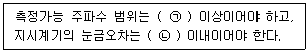
- ㉠ 31.5Hz ~ 8kHz, ㉡ 0.5dB
- ㉠ 31.5Hz ~ 8kHz, ㉡ 1dB
- ㉠ 8Hz ~ 31.5kHz, ㉡ 0.5dB
- ㉠ 8Hz ~ 31.5kHz, ㉡ 1dB
(정답률: 알수없음)
33. 환경기준에 의한 소음측정시 디지털 소음 자동분석계를 사용하여 측정할 때 일정한 샘플 주기 결정 후, 몇 분 이상 측정하여 산정한 등가소음도를 그 지점의 측정소음도로 하는가?
- 1분
- 5분
- 10분
- 30분
(정답률: 알수없음)
34. 철도소음의 측정시각 및 측정횟수 기준에 대한 내용이다. ( ) 안에 내용으로 알맞은 것은?
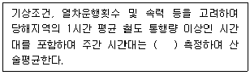
- 2시간 이상 간격을 두고 1시간씩 2회
- 3시간 이상 간격을 두고 1시간씩 3회
- 4시간 이상 간격을 두고 2시간씩 2회
- 2시간 이상 간격을 두고 2시간씩 1회
(정답률: 알수없음)
35. 다음은 철도소음관리기준 측정방법에 관한 내용이다. ( ) 안의 내용으로 알맞은 것은?
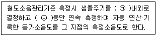
- ㉠ 0.1초, ㉡ 1시간
- ㉠ 0.1초, ㉡ 12시간
- ㉠ 1초, ㉡ 1시간
- ㉠ 1초, ㉡ 12시간
(정답률: 알수없음)
36. 소음배출허용기준 측정을 위한 측정시간 및 측정지점수 선정기준으로 옳은 것은?
- 밤시간대(22:00~06:00)에는 낮 시간대에 측정한 측정지점에서 2시간 간격으로 2회 이상 측정하여 산술평균한 값을 측정소음도로 한다.
- 적절한 측정시각에 5지점 이상의 측정지점수를 선정·측정하여 산술평균한 소음도를 츠겅소음도로 한다.
- 피해가 예상되는 적절한 측정시각에 2지점 이상의 측정지점수를 선정·측정하여 그중 가장 높은 소음도를 측정소음도로 한다.
- 낮시간대는 2시간 간격을 두고 1시간씩 2회 측정하여 산술평균하여, 밤시간대는 1회 1시간 동안 측정한다.
(정답률: 알수없음)
37. 소음계의 부속장치인 표준음 발생기에 관한 설명으로 틀린 것은?
- 소음계의 측정감도를 교정하는 기기이다.
- 발생음의 오차는 ±0.1dB 이내이어야 한다.
- 발새음의 음압도가 표시되어 있어야 한다.
- 발생음의 주파수가 표시되어 있어야 한다.
(정답률: 알수없음)
38. 항공기소음한도 측정을 위한 소음계의 청감보정회로 및 동특성으로 옳은 것은?
- 청감보정회로 A특성, 동특성 느림(Slow)
- 청감보정회로 A특성, 동특성 빠름(Fast)
- 청감보정회로 C특성, 동특성 느림(Slow)
- 청감보정회로 C특성, 동특성 빠름(Fast)
(정답률: 알수없음)
39. 노래연습장 소음으로 동일건물내 소음측정을 하였다. 측정지역 및 시간, 규제기준으로 옳은 것은?
- 주거지역 – 주간(08:00~18:00) - 50dB(A) 이하
- 녹지지역 – 주간(07:00~18:00) - 50dB(A) 이하
- 주거지역 – 야간(22:00~06:00) - 40dB(A) 이하
- 녹지지역 – 야간(22:00~⑤:00) - 55dB(A) 이하
(정답률: 알수없음)
40. 소음계의 구조별 성능에 관한 설명으로 틀린 것은?
- 지시계기 : 지침형 지시계기는 유효지시범위가 30dB이상 이어야 하고, 1dB 눈금간격은 2mm 이상으로 표시되어야 한다.
- 청감보정회로 : A특성을 갖추어야 하며, 자동차 소음측정용은 C특성도 함께 갖추어야 한다.
- 레벨레인지 변환기 : 측정하고자 하는 소음도가 지시계기의 범위내에 있도록 하기 위한 감쇠기이다.
- 마이크로폰 : 지향성이 작은 압력형으로 하며 기기의 본체와 분리가 가능하여야 한다.
(정답률: 알수없음)
3과목: 진동 측정 및 분석
41. 진동레벨계의 표준진동 발생기에 관한 설명으로 틀린 것은?
- 진동레벨계의 측정감도를 교정하는 기기이다.
- 발생진동의 주파수가 표시되어야 한다.
- 발생진동의 진동레벨이 표시되어야 한다.
- 발생진동의 오차는 ±1dB이내 이어야 한다.
(정답률: 알수없음)
42. 진동 측정기기 중 지시계기의 눈금오차는 얼마 이내이어야 하는가?
- 0.5 dB 이내
- 1 dB 이내
- 5 dB 이내
- 15 dB 이내
(정답률: 알수없음)
43. 진동방지계획 수립 시 다음 보기 중 일반적으로 가장 먼저 이루어지는 것은?
- 측정치와 규제 기준치의 차로부터 저감 목표레벨 설정
- 수진점 일대의 진동 실태조사
- 수진점의 진동 규제기준 확인
- 발생원의 위치와 발생기계를 확인
(정답률: 알수없음)
44. 발파진동 측정자료 분석시 평가진동레벨(최종값)은 소수점 몇 째자리에서 반올림하는가?
- 첫째자리
- 둘째자리
- 셋째자리
- 넷째자리
(정답률: 알수없음)
45. 배출허용기준 중 진동측정방법으로 진동픽업의 설치조건으로 틀린 것은?
- 수직방향 진동레벨을 측정할 수 있도록 설치한다.
- 경사 또는 요철이 없는 장소로 하고, 수평면을 충분히 확보할 수 있는 장소로 한다.
- 복잡한 반사, 회절현상이 예상되는 지점은 피한다.
- 완충물이 풍부하고, 충분히 다져서 단단히 굳은 장소로 한다.
(정답률: 알수없음)
46. 일정장력 T로 잡아늘린 현(弦)이 미소횡진동을 하고 있을 때 단위길이당 질량을 ρ라 하면 전파속도 C를 나타낸 식으로 옳은 것은?
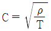
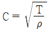
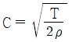
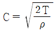
(정답률: 알수없음)
47. 규제기준 중 생활진동 측정방법으로 틀린 것은?
- 피해가 예상되는 적절한 측정시각에 2지점 이상의 측정지점수를 선정·측정하여 그 중 높은 진동레벨을 측정진동레벨로 한다.
- 진동픽업의 연결선은 잡음 등을 방지하기 위하여 지표면에 일직선으로 설치한다.
- 진동레벨계의 감각보정회로는 별도 규정이 없는 한 V특성(수직)에 고정하여 측정하여야 한다.
- 진동레벨계의 출력단자와 진동레벨기록기의 입력단자를 연결한 후 전원과 기기의 동작을 점검하고 분기마다 1회 교정을 실시하여야 한다.
(정답률: 알수없음)
48. 철도진동관리기준 측정방법에 관한 설명으로 틀린 것은?
- 옥외측정을 원칙으로 한다.
- 기상조건, 열차의 운행횟수 및 속도 등을 고려하여 당해지역의 3시간 평균 철도 통행량 이상인 시간대에 측정한다.
- 그 지역의 철도진동을 대표할 수 있는 지점이나 철도진동으로 인하여 문제를 일으킬 우려가 있는 지점을 택하여야 한다.
- 요일별로 진동 변동이 적은 평일(월요일부터 금요일 사이)에 당해지역의 철도진동을 측정하여야 한다.
(정답률: 알수없음)
49. 진동레벨계의 지시계기(meter) 성능기준 중 지침형에서의 유효지시범위는 얼마 이상 이어야 하는가?
- 5dB 이상
- 10dB 이상
- 15dB 이상
- 20dB 이상
(정답률: 알수없음)
50. 진동레벨계의 성능기준으로 옳은 것은?
- 진동픽업의 횡감도는 규정주파수에서 수감축 감도에 대한 차이가 15dB 이상이어야 한다.(연직특성)
- 레벨레인지 변환기가 있는 기기에 있어서 레벨레인지 변환기의 전환오차가 1dB 이내이어야 한다.
- 지시계기의 눈금오차는 1dB 이내이어야 한다.
- 측정가능 주파수 범위는 20~20000Hz 이상이어야 한다.
(정답률: 알수없음)
51. ( ) 안에 가장 적합한 진동은?
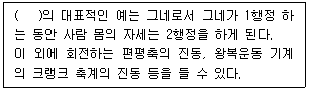
- 과도진동
- 자려진동
- 강제자려진동
- 계수여진진동
(정답률: 알수없음)
52. 외부로부터 힘을 받았을 때 진동을 일으키는 최소한의 인자는?
- 질량과 댐퍼
- 질량과 스프링
- 스프링과 댐퍼
- 질량, 댐퍼와 스프링
(정답률: 알수없음)
53. 측정진동레벨에 배경진동의 영향을 보정한 후 얻어진 진동레벨을 무엇이라 하는가?
- 대상진동레벨
- 평가진동레벨
- 배경진동레벨
- 정상진동레벨
(정답률: 알수없음)
54. 다음 ( ) 안에 들어갈 내용으로 알맞은 것은?
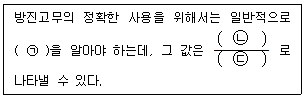
- ㉠ 정적배율, ㉡ 동적스프링정수, ㉢ 정적스프링정수
- ㉠ 동적배율, ㉡ 정적스프링정수, ㉢ 동적스프링정수
- ㉠ 동적배율, ㉡ 동적스프링정수, ㉢ 정적스프링정수
- ㉠ 정적배율, ㉡ 정적스프링정수, ㉢ 동적스프링정수
(정답률: 알수없음)
55. 제진재에 대한 설명으로 옳은 것은?
- 상대적으로 경량이고 잔향음의 에너지 저감용으로 사용한다.
- 상대적으로 신축성이 있는 점탄성 재질로 진동에너지의 전환 기능이다.
- 상대적으로 고밀도이고 기공이 없는 재질이다.
- 반작용이나 전환요소를 직렬이나 병렬조합으로 만들고 공기에 의해 전파되는 음의 저감에 이용한다.
(정답률: 알수없음)
56. 원통형 코일스프링의 스프링 정수에 관한 설명으로 옳은 것은?
- 스프링 정수는 전단탄성율에 반비례한다.
- 스프링 정수는 유효권수에 비례한다.
- 스프링 정수는 소선 직경의 4제곱에 비례한다.
- 스프링 정수는 평균코일 직경의 3제곱에 비례한다.
(정답률: 알수없음)
57. L10 진동레벨 계산을 위한 누적도곡선 표기에 관한 내용이다. ( )에 들어갈 내용으로 알맞은 것은?
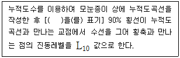
- 횡축에 누적도수, 좌측 종축에 진동레벨을, 우측 종축에 백분율
- 횡축에 백분율, 좌측 종축에 누적도수를, 우측 종축에 진동레벨
- 횡축에 진동레벨, 좌측 종축에 누적도수를, 우측 종축에 백분율
- 횡축에 백분율, 좌측 종축에 진동레벨을, 우측 종축에 누적도수
(정답률: 알수없음)
58. 도로교통진동의 진동한도 측정방법에 관한 설명이다. ( ) 안에 알맞은 것은?
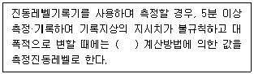
- L50 진동레벨
- Ldn 진동레벨
- L10 진동레벨
- 산술평균 진동레벨
(정답률: 알수없음)
59. 진동배출원의 부지경계선에서 측정한 측정진동레벨이 보정없이 대상진동레벨로 하는 경우의 기준으로 가장 적합한 것은?
- 측정진동레벨이 배경진동레벨보다 10dB 이상 크다.
- 측정진동레벨이 배경진동레벨보다 9dB 이상 크다.
- 측정진동레벨이 배경진동레벨보다 6dB 이상 크다.
- 측정진동레벨이 배경진동레벨보다 3dB 이상 크다.
(정답률: 알수없음)
60. 생활진동 측정자료 평가표에 기재할 사항으로 가장 거리가 먼 것은?
- 사업주
- 진동레벨계명
- 누적도수
- 지면조건
(정답률: 알수없음)
4과목: 소음진동 평가 및 대책
61. 판넬이 떨려 발생하는 소음을 방지하는데 가장 적합한 자재로서 공기전파음에 의해 발생하는 공진진폭의 저감과 판넬 가장자리나 구성요소 접속부의 진동에너지 전달의 저감에 사용되는 것은?
- 흡음재
- 차음재
- 제진재
- 차진재
(정답률: 알수없음)
62. 6m×4m×5m의 방이 있다. 이 방의 평균 흡음율이 0.2 일 때 잔향시간(초)은 얼마인가?
- 0.65
- 0.86
- 0.98
- 1.21
(정답률: 알수없음)
63. 소음·진동관리법령상 이동소음원이 규제에 따른 이동소음원의 종류로 가장 거리가 먼 것은? (단, 그 밖의 사항 등은 제외한다.)
- 저공으로 비행하는 항공기
- 이동하며 영업이나 홍보를 하기 위하여 사용하는 확성기
- 행락객이 사용하는 음향기계 및 기구
- 소음방지장치가 비정상이거나 음향장치를 부착하여 운행하는 이륜자동차
(정답률: 알수없음)
64. 환경정책기본법령상 공업지역 중 전용공업지역 및 일반공업지역의 도로변지역에서의 소음환경기준은? (단, 낮시간(06:00~22:00) 기준이다.)
- 60 Leq dB(A)
- 65 Leq dB(A)
- 70 Leq dB(A)
- 75 Leq dB(A)
(정답률: 알수없음)
65. 소음·진동관리법령상 주거지역의 주간(06:00~22:00) 도로 소음의 한도는 얼마인가?
- 58 Leq dB(A)
- 60 Leq dB(A)
- 68 Leq dB(A)
- 73 Leq dB(A)
(정답률: 알수없음)
66. 아래 그림에서 질량 m은 평면 내에서 움직인다. 이 계의 자유도는?
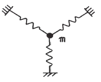
- 1 자유도
- 2 자유도
- 3 자유도
- 0 자유도
(정답률: 알수없음)
67. 임계감쇠는 감쇠비(ζ)가 어떤 값을 가질 때인가?
- ζ = 1
- ζ ＞ 1
- ζ ＜ 1
- ζ = 0
(정답률: 알수없음)
68. 어떤 소음원에서 방음장치를 하여 방사소음을 30dB을 줄일 수 있었다. 방음 장치를 설치하기 전후의 소리의 세기 비율은 얼마인가?
- 1/10
- 1/100
- 1/1000
- 1/10000
(정답률: 알수없음)
69. 방진재료로 금속스프링을 사용하는 경우 로킹모션(rockign motion)이 발생하기 쉽다. 이를 억제하기 위한 방법으로 틀린 것은?
- 기계 중량의 1~2배 정도의 가대를 부착한다.
- 하중을 평형분포 시킨다.
- 스프링의 정적 수축량이 일정한 것을 사용한다.
- 길이가 긴 스프링을 사용하여 계의 무게중심을 높인다.
(정답률: 알수없음)
70. 소음·진동관리법령상 시·도지사가 매년 환경부장관에게 제출하여야하는 연차 보고서에 포함되어야 하는 내용에 해당하지 않는 것은?
- 소음·진동 발생원 및 소음·진동현황
- 소음·진동 행정처분실적 및 점검계획
- 소음·진동 저감대책 추진실적 및 추진계획
- 소요 재원의 확보계획
(정답률: 알수없음)
71. 기계 장치의 취출구 소음을 줄이기 위한 대책으로 가장 적절하지 않은 것은?
- 취출구의 유속을 감소시킨다.
- 취출구 부위를 방음상자로 밀폐 처리한다.
- 취출관의 내면을 흡음 처리한다.
- 취출구에 소음기를 장착한다.
(정답률: 알수없음)
72. 정격유속(rated flow) 조건하에서 소음원에 소음기를 부착하기 전과 후의 공간상의 어떤 특정위치에서 측정한 음압레벨의 차를 의미하는 것은?
- 감쇠치
- 감음량
- 투과손실치
- 동적 삽입손실치
(정답률: 알수없음)
73. 소음·진동관리법령에 따라 소음·진동이 배출허용기준을 초과하여 배출되더라도 생활환경에 피해를 줄 우려가 없어 해당 공장의 부지 경계선으로부터 직선거리 200미터 이내에 특정시설이 없다면 소음·진동방지시설의 설치를 면제받을 수 있다. 이 때, 특정시설에 해당되지 않는 것은?
- 공장 또는 사업장
- 주택(폐가 제외), 학교, 종교시설
- 관광지 및 관광단지
- 소음·진동피해분쟁 발생지역
(정답률: 알수없음)
74. 소음·진동관리법령에 따른 용어의 정의로 틀린 것은?
- “소음(騷音)”이란 기계·기구·시설, 그 밖의 물체의 사용 또는 공동주택 등 환경부령으로 정하는 장소에서 사람의 활동으로 인하여 발생하는 강한 소리를 말한다.
- “진동(振動)”이란 기계·기구·시설, 그 밖의 물체의 사용으로 인하여 발생하는 강한 흔들림을 말한다.
- “소음발생건설기계”란 건설공사에 사용하는 기계 중 소음이 발생하는 기계로서 국토교통부령으로 정하는 것을 말한다.
- “교통기관”이란 기차·자동차·전차·도로 및 철도 등을 말한다. 다만, 항공기와 선박은 제외한다.
(정답률: 알수없음)
75. 소음·진동관리법령상 6개월 이하의 징역 또는 500만원 이하의 벌금기준에 해당하는 사항은?
- 제작차에 대한 변경 인증을 받지 아니하고 자동차를 제작한 자
- 소음도표지를 붙이지 아니한 자
- 작업시간 조정 등의 명령을 위반한 자
- 조업정지명령 등을 위반한 자
(정답률: 알수없음)
76. 음원에서 거리가 2배로 멀어짐에 따라 6dB의 음압레벨이 감소하는 음원의 종류와 음파의 전파형태가 올바르게 짝지어진 것은?
- 점음원-평면파
- 점음원-구면파
- 면음원-구면파
- 선음원-원통파
(정답률: 알수없음)
77. 소음·진동관리법령에 따라 자동차제작자는 제작차의 소음허용기준 적합 인증을 받아야 한다. 이 중 인증을 생략할 수 있는 자동차가 아닌 것은?
- 외교관, 주한 외국군인 또는 그 가족이 사용하기 위하여 반입하는 자동차
- 항공기 지상조업용(地上操業用)으로 반입하는 자동차
- 제철소·조선소 등 한정된 장소에서 운행되는 자동차로서 환경부장관이 정하여 고시하는 자동차
- 여행자 등이 다시 반출할 것을 조건으로 일시 반입하는 자동차
(정답률: 알수없음)
78. 팽창형 소음기에 관한 설명으로 옳은 것은?
- 전파경로 상에 두 음의 간섭에 의해 소음을 저감시키는 원리를 이용한다.
- 고주파 대역에서 감음효과가 뛰어나다.
- 단면 불연속부의 음에너지 반사에 의해 감음된다.
- 감음주파수는 팽창부 단면적비에 의해 결정된다.
(정답률: 알수없음)
79. 발파시 지반의 진동속도 V(cm/s)를 구하는 관계식으로 옳은 것은? (단, K, n : 지질암반조건, 발파조건 등에 따르는 상수, W : 지발당 장약량(kg), R : 발파원으로부터의 거리(m), b : 1/2 또는 1/3 이다.)
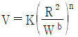
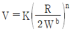
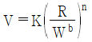
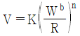
(정답률: 알수없음)
80. 그림과 같이 질량이 작은 기계장치에 금속스프링으로 방진 지지를 할 경우 금속스프링의 질량을 무시할 수 없는 경우가 있다. 기계장치의 질량을 M, 금속스프링의 질량을 m, 금속스프링의 강성을 k라고 할 때, 금속스프링의 질량을 고려한 시스템의 고유진동수(fn)를 구하는 계산식으로 옳은 것은?
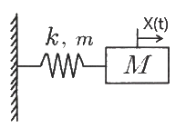
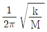
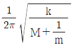
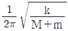
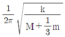
(정답률: 알수없음)